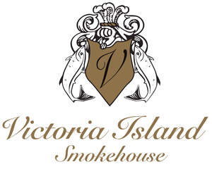

Trade Mark Journal No.2026/007 13 February 2026
UK00004331237 28 January 2026 (29,35,40)

- Class 29
- Smoked salmon; Smoked fish; Sturgeon eggs; Salmon caviar; Fish products being frozen; Food products made from fish; Fish; Frozen fish; Salmon, not live; Preserved fish; Fish, preserved.
- Class 35
- Wholesale services in relation to seafood; Distribution of samples; Sample distribution; Distribution of advertising samples; Arranging the distribution of advertising samples; Distribution of advertising material; Distribution of advertising materials; Distribution of prospectuses and samples; Distribution of advertising leaflets; Distribution of samples for advertising purposes; Distribution of publicity leaflets; Distribution of advertising brochures; Distribution of samples for publicity purposes; Distribution of advertising matter; Distribution of advertising announcements; Distribution of advertisements and commercial announcements; Distribution of promotional material; Publicity brochure distribution; Advertising flyer distribution; Distribution of promotional leaflets; Inventory management of parts and components for manufacturers and suppliers; Chamber of commerce services for the promotion of commerce; Chamber of commerce services for the promotion of trade; Chamber of commerce services for the promotion of businesses; Business management services relating to electronic commerce; Organisation of exhibitions for business or commerce; Retail services in relation to seafood; Provision of information relating to commerce; Advertising services relating to the marine and maritime industry.
- Class 40
- Smoking of fish; Fish smoking; Fish processing.
Victoria Island Smokehouse Ltd